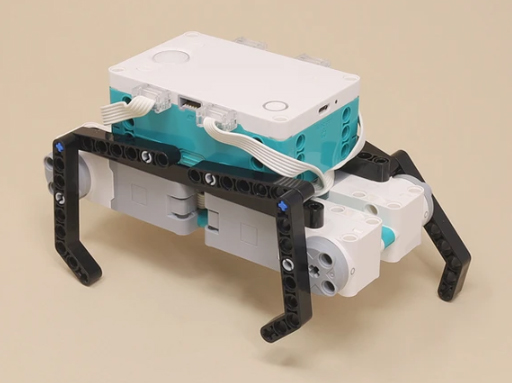

Building Instructions

4-Motor Walker | |
|---|---|
|  |
This model shows a simple way to make a 4-leg walker by using a motor to control each leg. It walks with an alternating left/right and front/back pattern similar to an animal.
Although it uses all of the motors in the kit, you can add non-moving parts to it to make various animals that you can invent, such as this Spider. If you need spare motors and don't need the robot to turn, you could reduce it to two motors by grouping the front and rear legs into pairs driven by one motor as in this Cat, or with more work you can even do it with only one motor as shown in the 1-Motor Walker. |
Building Instructions |
|
|---|---|
| 4-Motor Walker |
Programming |
|
|---|---|
 | 4-Motor Walker Programming.zip |
 | 1 4-Motor Walk.lms |
| 2 4-Motor Walker RC.lms |
 |
4-Motor Walk
This simple program shows how to make the model walk forward, by using the right starting position and direction for the motors to get an alternating action. |
 |
4-Motor Walker RC
This remote control program uses a D-pad that can make the robot walk forward, backward, turn left, or turn right. |